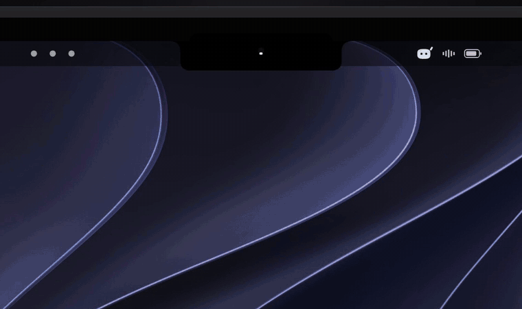

Your ideas, documents and audio in one workspace
AnF brings writing, reading, saved conversations and local media together on Windows and Android, with optional services you choose.
Explore the sourceBuild and verification statusKeep your flow
- Read documents, write drafts and reopen saved conversations.
- Use Windows local AI within your device's capacity; choose whether to share selected context with an online provider.
- Pair devices on your own network and explicitly sync selected work.
- Keep Music Hub separate from Audio Studio, with local tracks, audiobooks, podcasts, playlists and offline synced lyrics.
Embedded music
The native Spotube build is opt-in and still needs current installed verification. MKR Music is requested but has no native playback runtime packaged yet. An external website, Spotify launch or emulator is not its promised in-app experience. See implementation and test boundaries.
Updates with your data intact
Preserve existing Windows installation records and Android's two distinct application identities and original signers. Do not uninstall an app or delete its data to bypass an update failure. See identity compatibility.
Public Windows publication remains on hold for an unresolved Defender detection. The existing certificate is self-signed and not publicly trusted; signing does not clear malware detection or SmartScreen reputation. Do not weaken protection to run a build.
Upstream companion
AnF builds on Coucou by Louis Raillé. The macOS notch companion, Mochi artwork and historical documentation have their own platform and licensing boundaries; upstream downloads are not AnF Android/Windows updates.
